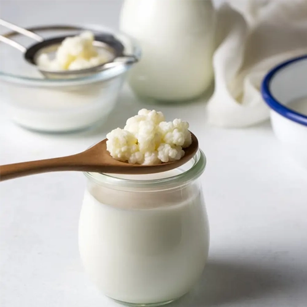

Beneficios principales
El kéfir contiene microorganismos procedentes de su proceso de fermentación, una de las características que lo distingue de muchos otros alimentos.
Al elaborarse a partir de leche, puede aportar nutrientes como proteínas, calcio, fósforo y vitaminas, aunque su composición depende del producto utilizado
Durante la fermentación, los microorganismos consumen parte de la lactosa presente en la leche, por lo que el kéfir suele contener menos lactosa que la leche de la que procede.
Su particular textura y sabor nacen de un proceso de fermentación en el que bacterias y levaduras trabajan conjuntamente.
Un alimento vivo por naturaleza
El kéfir se obtiene mediante la fermentación de la leche con nódulos formados por una comunidad de bacterias y levaduras. Durante este proceso, los microorganismos transforman parte de los componentes de la leche y dan lugar a su característico sabor ligeramente ácido y textura cremosa.
Todo comienza con los nódulos
Con su peculiar aspecto parecido a pequeños racimos, los nódulos son el corazón del kéfir. En ellos conviven bacterias y levaduras que trabajan en conjunto para transformar la leche mediante la fermentación.
Detrás de cada vaso de kéfir existe un proceso de fermentación que se ha transmitido durante generaciones. Una combinación de tradición, microorganismos y tiempo que sigue estando viva hoy.
